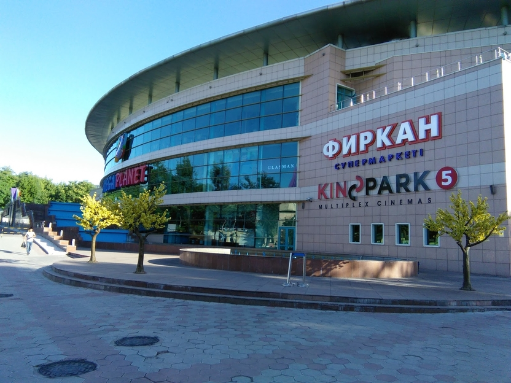
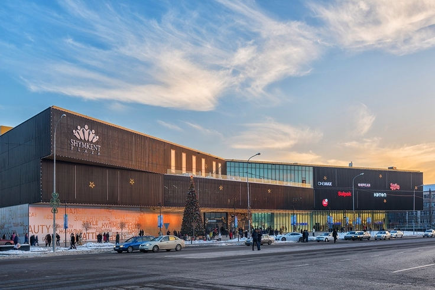
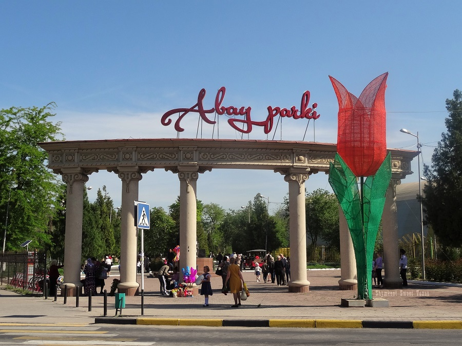
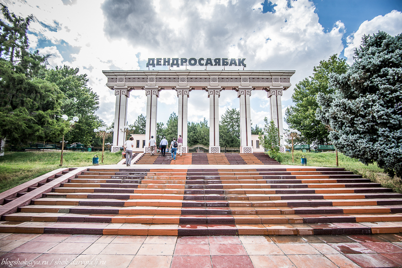
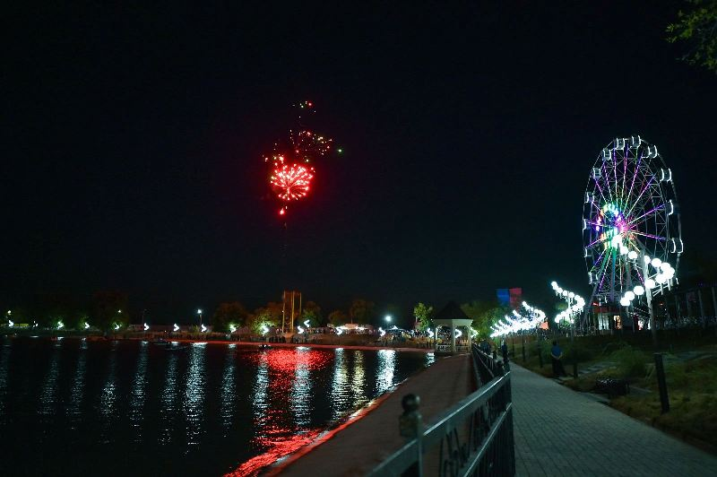
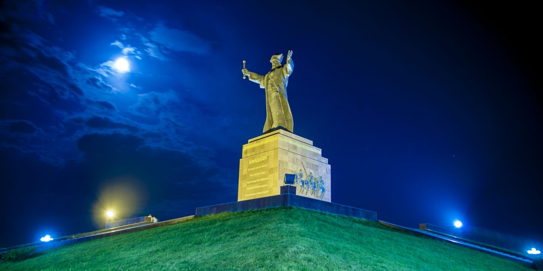

Shopping Mall
MegaPlanet Shymkent

Take a break from sightseeing by indulging in some retail therapy at Mega Planet. Find all your favorite brands under one roof and buy anything from quality clothes to the latest gadgets, or pick up a few fresh groceries at the supermarket on the first floor. The mall also houses a movie theater, skating rink, and a food court.
Shopping Mall
Shymkent Plaza

shopping and entertainment center in Shymkent. PLAZA will be the largest shopping and entertainment center in the city of Shymkent with total area of 48,400 sq.m. The plaza itself is much bigger than other malls in city,but not many brands. The food court has 6 or 7 fast food restaurants.
Park
Abay Park

Awesome place for walking, sports (there is a playground with equipment) bicycles for hire. And lots of fresh air. Quite and green place, best for rest and sports! Good place for entertainment.
Park
Dendropark

Awesome great place. The ticket price was slightly more than 20 (!) tenge, which made me incredibly and pleasantly surprised. But the emotions and impressions can not be estimated in monetary terms. I was there in the late autumn. Very calm and beautiful place. Yellowed leaves of trees on the ground and peace of mind. You can wander and think about your own. Stand on the bridge, enjoy the views. This park is worth visiting.
Park
Zhailaukol

An excellent park for walking with children, here is even such a rare opportunity in our city to feed fish, the real ones in the lake! Something reminds me of Tashkent parks, because there is a lake in every park) and of course I like that there is a part with attractions and a part of the park for simple walks. He is especially handsome in the evening
Monument
Baydibek bi

A large and beautiful monument dedicated to the historical figure. Near the cafe "Panorama" and the park "Independence", a spectacular view of the city. Very good places to walk after after a hard day's work and weekends with children, a park and attractions and catamarans and singing fountains all in one place.